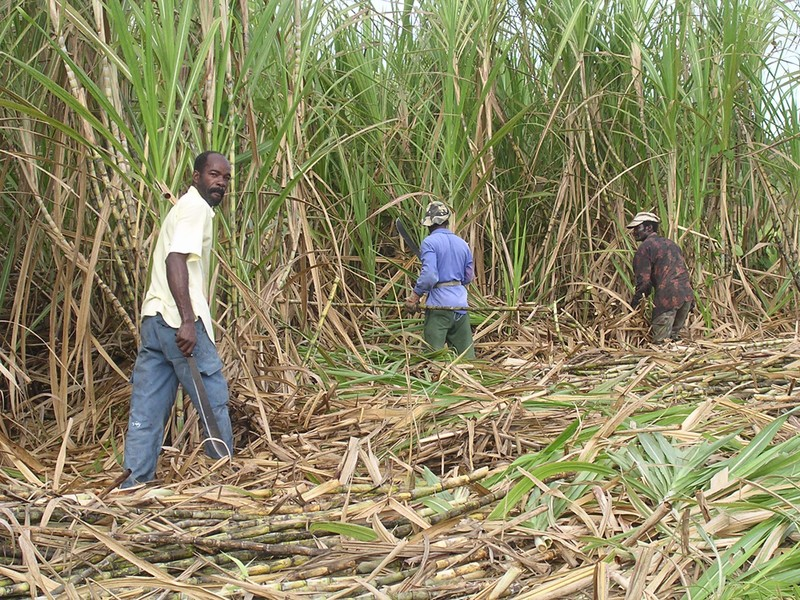
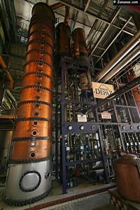
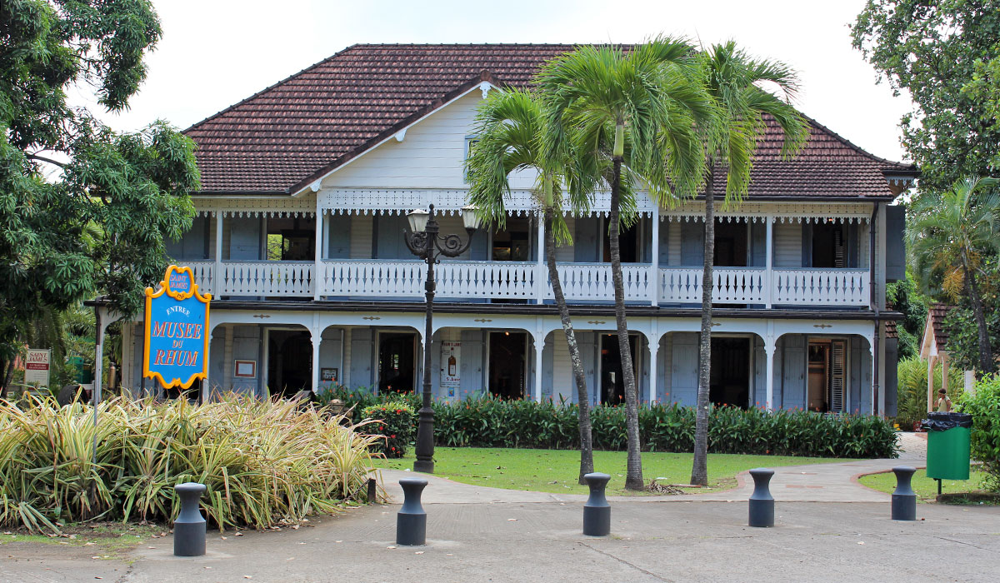
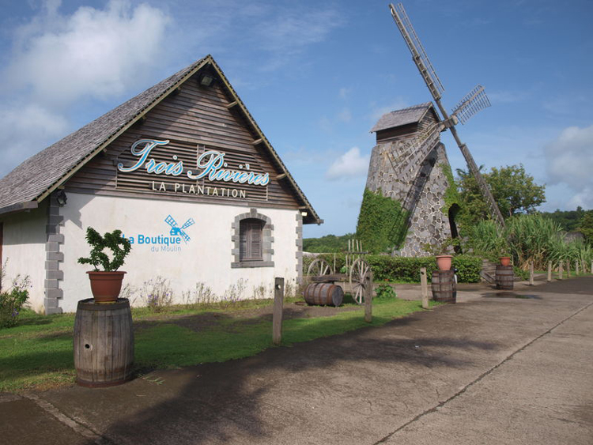
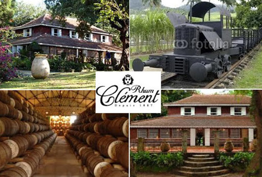
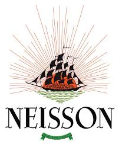

En martiniques les distilleries sont un important vestige du colonnialisme. pour la plupart elles sont toujours en activité et acceuillent les visiteurs currieux d'en apprendre plus sur la transformation de la canne-à-sucre en rhum. généralement elles se composent :
d'un champ,

d'une salle aux cheminées en cuivre de distillation

et d'une maison coloniale transformée en musée

Les distilleries les plus connues sont:
lA MAUNY

TROIS RIVIÈRE

CLÉMENT

NEISSON
